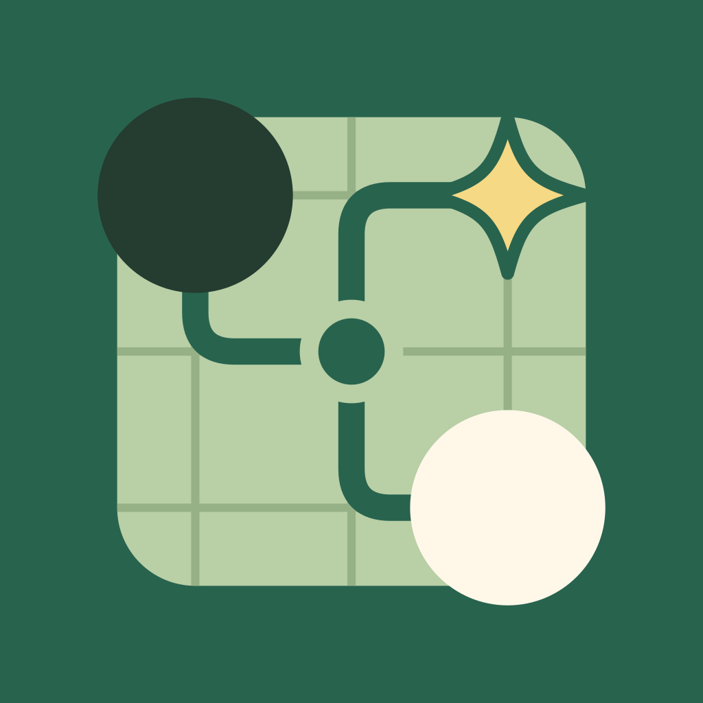

<!doctype html><html lang="zh-CN"><meta charset="utf-8"><meta name="viewport" content="width=device-width,initial-scale=1"><title>KataDroid · AI Icon</title><style>*{box-sizing:border-box}body{margin:0;background:#f2f5ed;color:#263c30;font:14px/1.6 "Noto Sans SC",sans-serif;padding:48px 28px}main{max-width:920px;margin:auto}header{display:flex;align-items:baseline;justify-content:space-between;border-bottom:1px solid #d5decd;padding-bottom:20px}h1{font-size:24px;margin:0}header span{color:#718269;font-size:11px;letter-spacing:1px}.hero{display:flex;align-items:center;gap:64px;margin:56px 0}.hero img{width:240px;height:240px;border-radius:54px;box-shadow:0 16px 32px #27463022}h2{font-size:30px;font-weight:500;margin:0 0 16px}.copy p{margin:8px 0;color:#61755a}.copy small{font-size:11px;letter-spacing:2px;color:#73866a}.compare{display:grid;grid-template-columns:1fr 1fr;gap:20px}.card{border-radius:24px;background:#e5eddc;padding:24px;display:flex;align-items:center;gap:24px}.card img{width:112px;height:112px;border-radius:26px}.card.new{background:#dce9d0}.card h3{font-size:15px;margin:0 0 6px}.card p{font-size:12px;margin:0;color:#62745b}.sizes{display:flex;align-items:flex-end;gap:30px;padding:32px 0}.sizes figure{margin:0;text-align:center}.sizes img{display:block;border-radius:25%}.sizes figcaption{font-size:11px;color:#718269;margin-top:8px}.circle{border-radius:50%!important}footer{font-size:11px;color:#718269;border-top:1px solid #d5decd;padding-top:16px}@media(max-width:600px){.hero{gap:24px;margin:32px 0}.hero img{width:136px;height:136px;border-radius:30px}h2{font-size:22px}.copy p{font-size:12px}.compare{grid-template-columns:1fr}.card img{width:80px;height:80px}.sizes{gap:20px}}</style><main><header><h1>KataDroid</h1><span>GO × INTELLIGENCE</span></header><section class="hero"><div class="copy"><small>每一步，都有所思</small><h2>围棋，与智能。</h2><p>黑白棋子，保留围棋识别。<br>连接节点，表达推演与分析。<br>一枚金色灵光，点出 AI 的洞察。</p></div></section><section class="sizes"><figure><figcaption>72 px</figcaption></figure><figure><figcaption>48 px</figcaption></figure><figure><figcaption>32 px</figcaption></figure><figure><figcaption>24 px</figcaption></figure><figure><figcaption>圆形蒙版</figcaption></figure></section><footer>独立设计文件 · 未修改 Android 项目资源 · SVG 矢量源文件与 PNG 导出</footer></main></html>